🔴 Hard📅 2026-06-15🧩 Vigenère Cipher / Kasiski Examination + Index of Coincidence + Frequency Analysis
📋 Level Summary
Field
Value
Type
Krypton
Cipher / Technique
Vigenère Cipher / Kasiski Examination + Index of Coincidence + Frequency Analysis
Difficulty
🔴 Hard
Date
2026-06-15
🔍 Description
This level presents the hardest variant of the Vigenère cipher challenge: the key length is unknown. Without knowing how many columns to split the ciphertext into, per-column frequency analysis cannot begin. Two classical techniques are used in sequence to determine the key length. The Kasiski examination finds repeated trigrams in the ciphertext and measures the distances between them — if the same plaintext segment encrypted with the same key offset produces the same ciphertext, the distance between repeats will be a multiple of the key length. The Index of Coincidence (IoC) provides a statistical confirmation: when the ciphertext is split into the correct number of columns, each column behaves like a monoalphabetic cipher and its letter distribution matches English (IoC ≈ 0.065–0.070). Once the key length is confirmed, per-column chi-squared frequency analysis recovers each key letter independently.
🎯 End Goals
Read the intercepted ciphertext files and identify that the key length is unknown
Use the Kasiski examination to find repeated trigrams and derive a key length candidate
Confirm the key length using the Index of Coincidence across all three ciphertext files
Run per-column chi-squared frequency analysis to recover the full Vigenère key
Decrypt the krypton6 password using the recovered key
SSH into krypton6 using the decoded password
🪜 Steps to Reproduce
SSH into krypton5 and navigate to /krypton/krypton5/ to read the README and list available files
Read the ciphertext files and consult Claude on the cryptanalysis strategy for an unknown-key-length Vigenère cipher
Run Kasiski examination and IoC analysis on found1 to determine the key length, then recover the key via per-column frequency analysis
Confirm the key length and key against found2 and found3 independently
Read krypton6, decrypt the ciphertext using the recovered key, and obtain the password
SSH into krypton6 using the decoded password
🧠 Analysis
Step 1 — Navigate and read level files Logged in as krypton5. Ran cd /krypton/krypton5 and ls -la to list files: found1, found2, found3, krypton6, and README. Ran cat README which explained that this level uses a Vigenère cipher — but this time the key length is unknown. Three intercepted ciphertext files are provided, and the README hints that frequency analysis can still break a known key length — the challenge is finding it first.
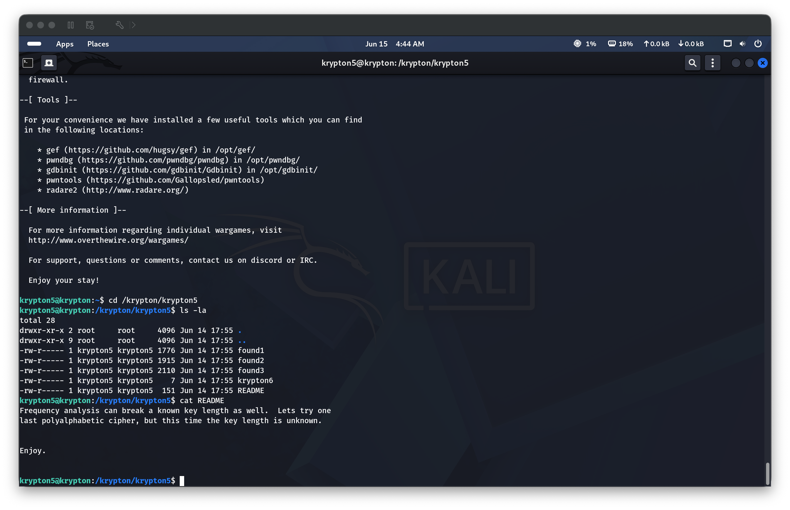
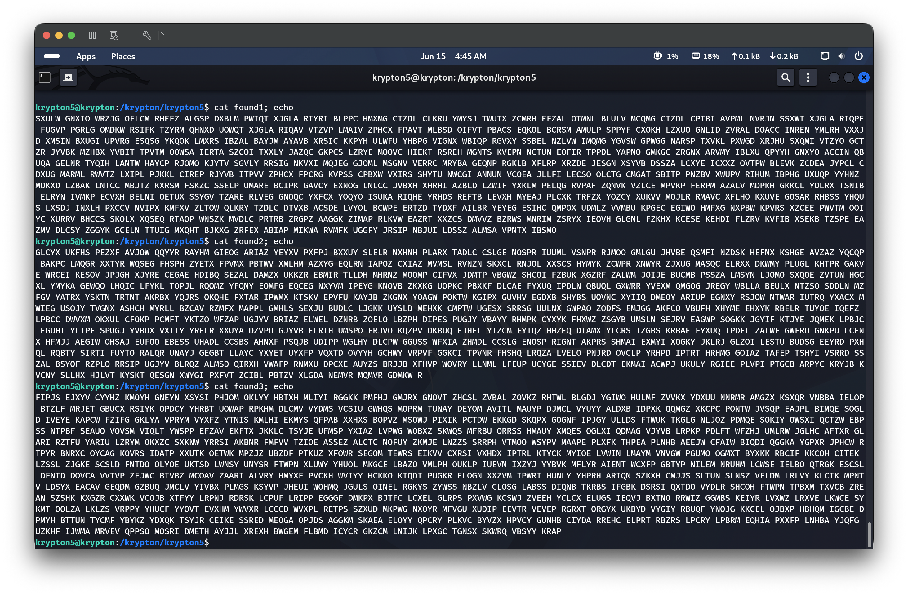
Step 2 — Outline the cryptanalysis strategy (Kasiski + IoC + frequency analysis) Pasted the problem to Claude: polyalphabetic cipher, key length unknown, three ciphertext files available. Claude outlined the two-phase strategy. Phase 1 — determine the key length: (1) Kasiski examination — search for repeated 3-letter sequences (trigrams) in the ciphertext; if a distance between two repeats is a multiple of the key length, the GCD of all such distances is a strong key length candidate. (2) Index of Coincidence — for each candidate key length k, split the ciphertext into k columns and compute the average IoC across columns using IC = Σ(n_i × (n_i − 1)) / (N × (N − 1)); English text has IoC ≈ 0.065–0.070, random text ≈ 0.038 — the key length that pushes IoC closest to English is the correct one. Phase 2 — once the key length is confirmed, split into columns and run chi-squared frequency analysis on each column independently to recover each key letter.
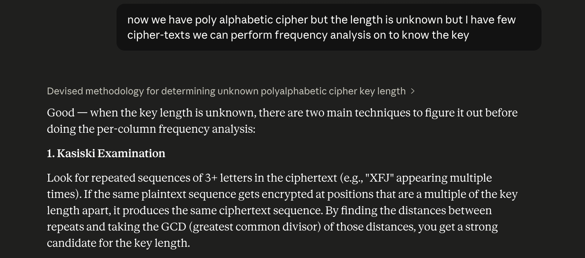
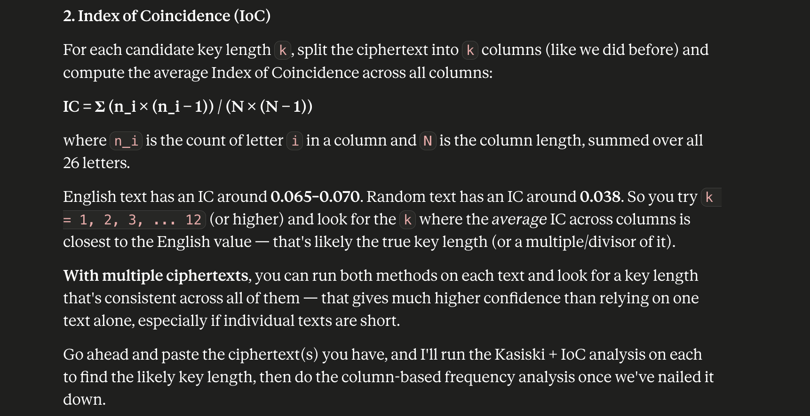
Step 3 — Frequency analysis on found1 Pasted found1 to Claude. Kasiski examination found that factor 9 appeared overwhelmingly in 166 repeated-trigram distances — a strong signal. IoC confirmation tested key lengths 6, 9, and 12: key length 6 gave IoC 0.0518, key length 9 gave 0.0700 (squarely in the English range), key length 12 gave 0.0523 — a clear standout. Per-column chi-squared analysis across 9 columns gave the following shifts:
Column
Best shift
Key letter
0
10
K
1
4
E
2
24
Y
3
11
L
4
4
E
5
13
N
6
6
G
7
19
T
8
7
H
Derived key: KEYLENGTH.
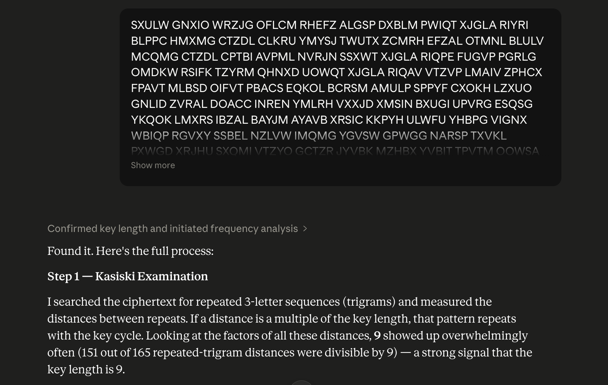
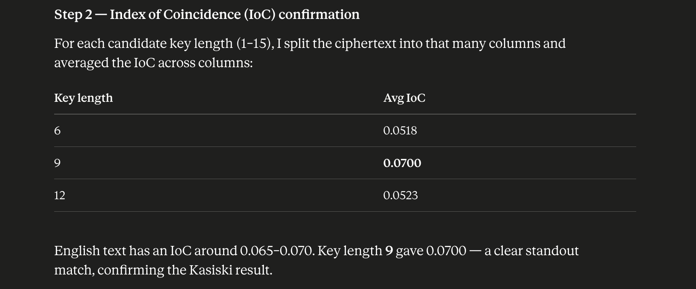
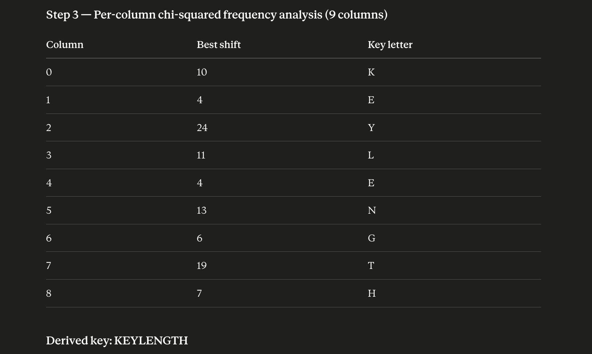
Step 4 — Frequency analysis on found2 Pasted found2 to Claude with the same analysis. IoC for key length 9 came out at 0.0653 (vs. ~−0.04 for all other lengths), and the Kasiski factor 9 appeared in 166 repeated-trigram distances — independently confirming the key length. Per-column chi-squared produced the identical shift table: the same key KEYLENGTH was derived from the second file without any input from the first result.
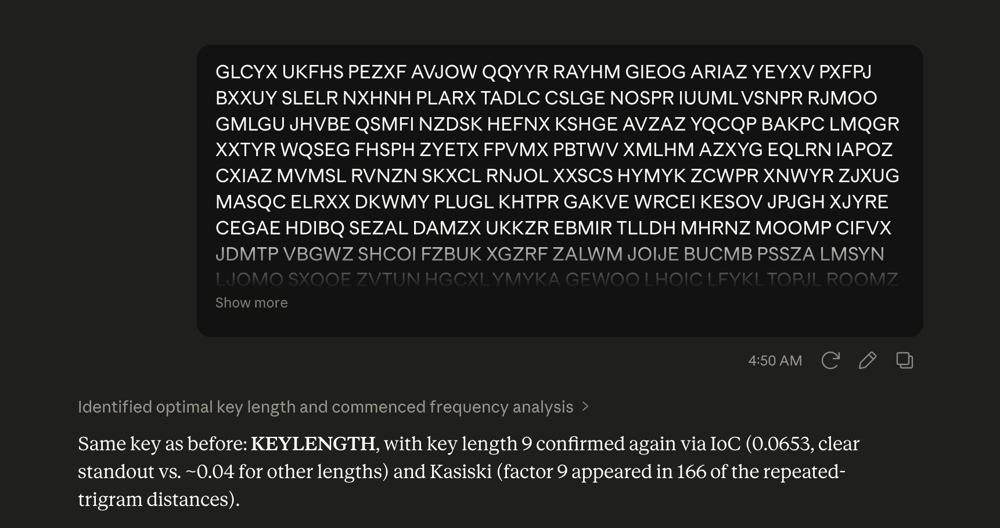
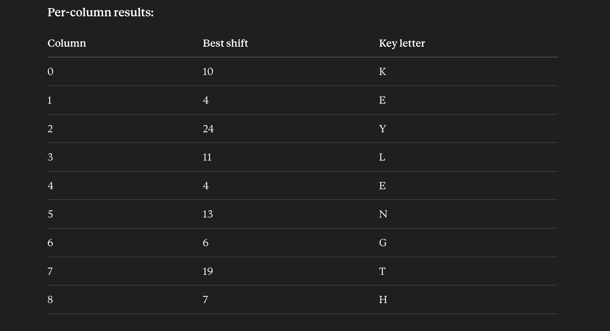
Step 5 — Frequency analysis on found3 Pasted found3 to Claude. IoC for key length 9 was again 0.0653 (vs. ~−0.04 elsewhere), and the per-column analysis produced the same shift table for all 9 columns. All three files independently converged on KEYLENGTH — a triple confirmation that the key is correct.
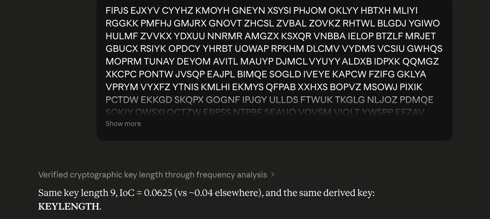
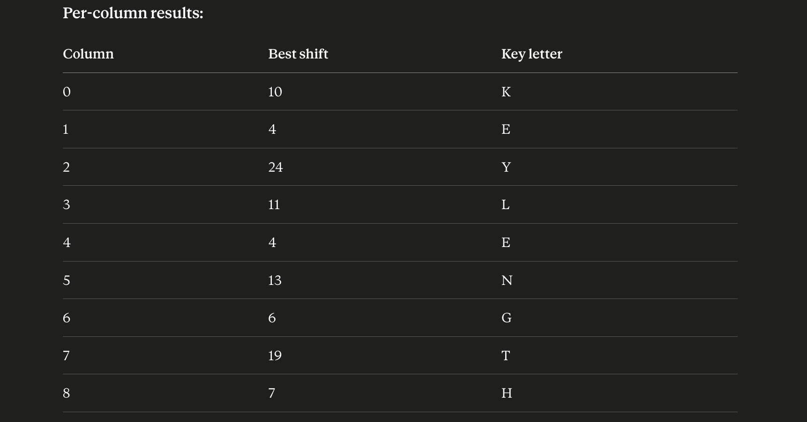
Step 6 — Read and decrypt the krypton6 password Ran cat krypton6; echo which showed the ciphertext BELOS Z. Asked Claude to decrypt BELOSZ using key KEYLENGTH (cycling through K-E-Y-L-E-N). The letter-by-letter decryption: B−K=R, E−E=A, L−Y=N, O−L=D, S−E=O, Z−N=M — giving the plaintext RANDOM.
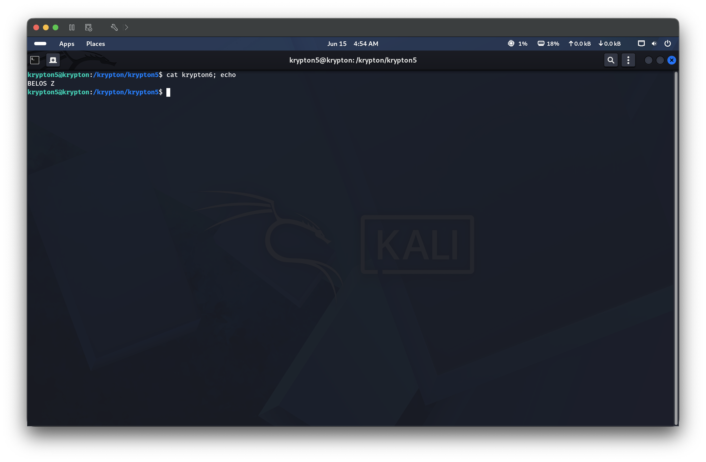
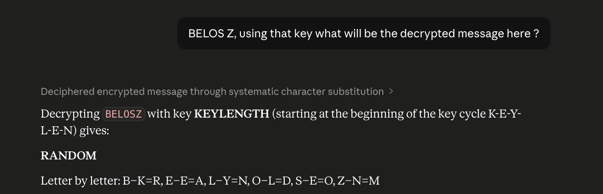
Step 7 — SSH into krypton6 with the decoded password Ran exit to leave krypton5, then ssh krypton6@krypton.labs.overthewire.org -p 2231 and authenticated with password RANDOM. The OTW welcome banner confirmed a successful login to the krypton6 shell.
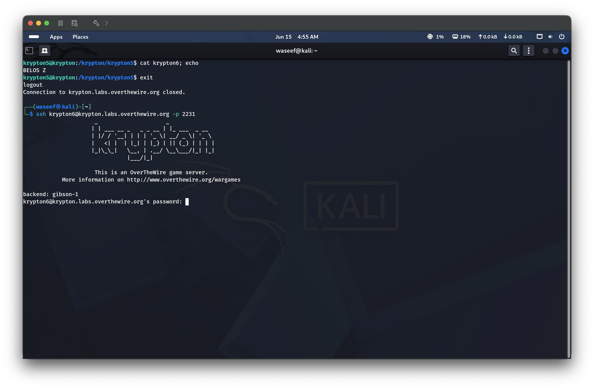
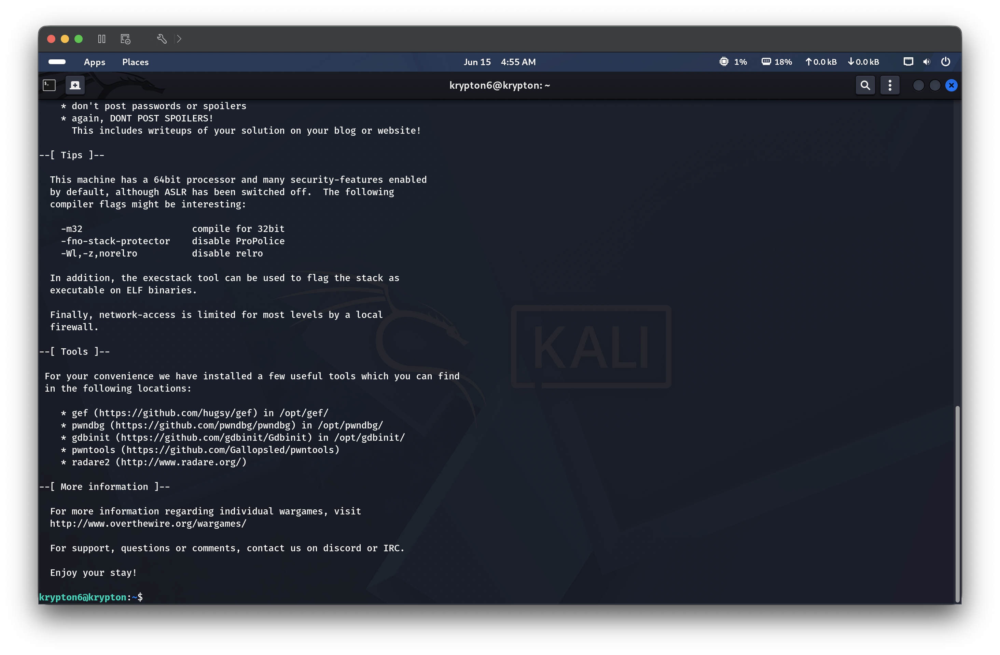
🔑 Key Concepts Learned
When the Vigenère key length is unknown, frequency analysis cannot start — first you must determine how many columns to split into
The Kasiski examination exploits the fact that identical plaintext encrypted at key-cycle-aligned positions produces identical ciphertext; the GCD of all repeat distances is a reliable key length indicator
The Index of Coincidence provides a statistical confirmation: the correct key length produces columns whose letter distributions match English (IoC ≈ 0.065–0.070), while wrong lengths produce near-random distributions (IoC ≈ 0.038)
Running both methods across multiple ciphertext files gives triple confirmation — all three files independently agreed on key length 9 and key KEYLENGTH
The derived key spelling out KEYLENGTH is a deliberate easter egg from the level designers — a reminder that the key itself encodes the technique used to crack it
Claude can automate the entire cryptanalysis pipeline (Kasiski → IoC → chi-squared) given just the raw ciphertext, making what was historically a days-long manual process a matter of seconds